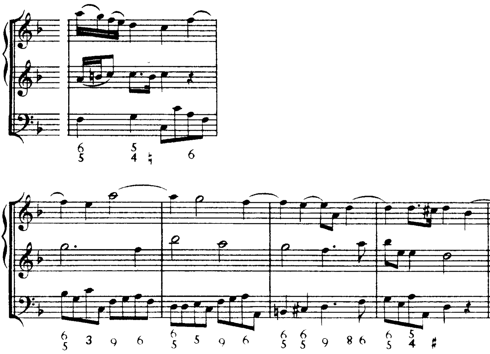

Dopo la restituzione della V2: la risoluzione di un ritardo che prepara il successivo. Due voci in seste o in terze, una sincopata; e in Corelli due violini che si scambiano il ritardo.
Molte progressioni utilizzate nelle composizioni di epoca tonale derivano appunto da successioni di sincopi consonanti o dissonanti.
F. Salzer, C. Schachter, Contrappunto e composizione, p. 89
La V2 chiedeva un basso di dodici–sedici battute con dominanti secondarie e una modulazione a un tono vicino. La correzione si è concentrata su quattro punti, che sono gli argomenti dell’unità 4.
1. La sensibile secondaria. Il IV♯ del V/V (e ogni nota alzata di una dominante secondaria) sale di semitono e non si raddoppia.
2. La falsa relazione. Il cromatismo si fa nella stessa voce: si♭–si♮ nel tenore, non si♭ nel contralto e si♮ nel basso nell’accordo dopo.
3. La settima della dominante secondaria. Scende di grado, come quella del V7: nel V7/IV la settima è il mi♭.
4. La modulazione. Accordo perno, dominante della tonalità nuova, cadenza che la conferma (U4 L4); una sensibile isolata è una tonicizzazione, non una modulazione.
La falsa relazione nell’arrivo al V/V: il si♭ del IV in una voce e il si♮ in un’altra, subito dopo. Nel modello, alla b. 6, il tenore porta tutti e due (si♭, poi si♮) e sale al do del I64; alla b. 2 il cromatismo è nel basso.
Moto parallelo sincopato, 4° anno, lezione 37, p. 95
Il libro mostra i ritardi 4–3, 2–3 e 7–6 dentro un movimento di terze o di seste parallele: è la catena di questa lezione.
Una catena di ritardi è una serie di ritardi in cui la risoluzione di ciascuno è la preparazione del seguente: la nota che scende sulla consonanza viene legata, e sul tempo forte dopo è di nuovo dissonante. Nasce da due voci in moto parallelo, una delle quali è spostata di mezza battuta: seste parallele con la voce superiore in ritardo danno una catena di 7–6; terze (o decime) con la voce inferiore in ritardo danno una catena di 2–3. Le serie più usate sono 7–6 e 2–3; la serie di 4–3 è possibile ma meno fluida.
F. Salzer, C. Schachter, Contrappunto e composizione, p. 89; D. D’Urso, C. Bertolini, Il linguaggio della musica, 4° anno, p. 95.
Soppressa la sincope, il primo esempio è una scala in seste parallele sopra il basso che scende per grado (re–fa, do–mi, si♭–re…), il secondo una scala in decime: due successioni corrette, che la sincope rende dissonanti su ogni tempo forte senza toccarne la condotta. È il caso in cui la regola di Dubois si legge al contrario: la sincope non nasconde le parallele, ma le parallele imperfette si possono caricare di ritardi. Per la stessa ragione una catena di 9–8 non si fa: soppressa la sincope, è una serie di ottave; e una catena di 4–5 è una serie di quinte.
Nella chiusa del Benedictus due ritardi si concatenano nel contralto. Alla b. 19 il la, tenuto dal terzo tempo, diventa quarta quando il tenore sale al mi e si scioglie sul sol; il sol è ribattuto e legato, e sul primo tempo della b. 20 è di nuovo quarta, sopra il re del tenore, prima di scendere al fa♯ della cadenza. La risoluzione del primo ritardo è la preparazione del secondo.
Allungare la catena senza misura in un esercizio di contrappunto. Negli esercizi lo stesso ritardo non si ripete più di tre volte di seguito (Salzer–Schachter, p. 89): la quarta specie lo interrompe con una sincope consonante. Nella composizione libera la catena può durare di più, perché diventa una progressione e la regolarità è il suo senso.
La progressione è la ripetizione di un modulo melodico e armonico su gradi diversi: il modello e le sue riprese, che ne riproducono fedelmente le note del basso, le cifre e il percorso delle voci superiori. Nella sonata a tre la catena di ritardi è il modo più frequente di costruirla: i due violini procedono per grado congiunto a distanza di seconda o di terza, e ciascuno tiene la propria nota mentre l’altro attacca la sua.
C. Marenco, Manuale d’armonia, p. 34; F. Salzer, C. Schachter, Contrappunto e composizione, p. 89.

Le cifre dell’edizione per il basso continuo (Joachim–Chrysander) segnano la catena: 9–6 alla b. 9; 6/5, 5, 9–6 alla b. 10; 6/5, 6/5, 9–8 alla b. 11. Sul primo tempo della b. 10 il violino I tiene il la mentre il violino II attacca il si♭: sopra il re del basso è un IV65 di fa, e il la è la sua settima, preparata sulla battuta prima. Sul secondo tempo il la scende al sol e il violino II tiene il si♭, quinta diminuita sopra il mi (il VII); sul terzo il si♭ scende al la e il violino I tiene il sol, nona sopra il fa, che scende al fa quando il basso passa al la: IV65–VII–I.
La b. 11 ripete la b. 10 una terza sotto. Il basso sale si♮–do♯–re come prima era salito re–mi–fa, e i due violini ripetono lo scambio una terza più in basso (fa contro sol, poi mi contro sol, poi la nona mi sopra il re): è la ripresa del modello in re minore, con il sesto e il settimo grado alzati. La nona della b. 11 scende all’ottava passando per il la, e la b. 12 chiude la cadenza nella tonalità nuova. In due battute la catena è insieme contrappunto di quarta specie, successione di ritardi e modulazione alla relativa.
Leggere la catena una voce alla volta. Ciascun violino, da solo, è una linea che scende per grado con qualche nota legata; la dissonanza nasce soltanto fra i due, o fra uno dei due e il basso, e cambia voce a ogni tempo. Si analizza tempo per tempo: chi tiene, chi attacca, contro chi è dissonante la nota tenuta.
La risoluzione di ogni ritardo prepara il successivo. Seste parallele con la voce superiore sincopata: 7–6. Terze o decime con la voce inferiore sincopata: 2–3. Non si concatenano 9–8 (ottave) né 4–5 (quinte). Negli esercizi, non più di tre ritardi uguali di seguito.
Due violini a distanza di seconda o di terza, ciascuno tiene la nota mentre l’altro attacca: sul basso il modello IV65–VII–I, ripetuto una terza sotto, porta da fa a re minore (Grave, bb. 9–12).
Per casa, una catena di 2–3 sotto una voce data in re maggiore, con la versione senza sincope. L’ora si chiude con il solfeggio parlato, cantato e ritmico, in fondo alla pagina. Seconda ora: interrogazioni di teoria, tutta l’ora (lezione 5); il basso di sedici battute con ritardi è nel Workbook.
Compiti per la prossima volta
Sotto la voce data (re maggiore, dieci semibrevi che scendono per grado) scrivere il basso in sincopi: pausa di minima e re4 alla b. 1, decima sotto il fa♯; poi una catena di 2–3 (alla decima, 9–10) fino alla b. 9, e il re finale.
Sotto ogni battuta la cifra (9–10). Poi, su un secondo rigo, la stessa catena con la sincope soppressa: si tolgono le note tenute e restano le risoluzioni. Che intervallo resta fra le due voci, battuta per battuta? Perché una catena di 9–8 non si potrebbe scrivere nello stesso modo?
Sul quaderno, a matita. La foto del lavoro finito va su Classroom. Nel Workbook: apri l’esercizio 5.4 ↗
Compiti per la prossima volta
n. 288 e n. 289 parlato · n. 290 e n. 291 cantato · n. 292 e n. 293 ritmico
Ogni pezzo a tempo, senza fermarti: il parlato a nomi, il cantato prendendo il primo suono dalla tastiera, il ritmico battendo la pulsazione.
Scrivi la linea del basso sul quaderno, in chiave di basso: otto battute in 4/4, fa maggiore. Il primo suono è la. Prima il riferimento, poi tutto due volte, ogni coppia di battute due volte, il collegamento 1–4, 3–6 e 5–8, e tutto per controllare.
Il riferimento: accordo di tonica e primo suono
Il dettato · otto battute
Le sezioni (riferimento, tutto, le coppie, il collegamento) si ascoltano una per una e si ripetono quanto serve; le fasi fanno la procedura della classe, con gli annunci e le pause, da qualunque punto.
Sul quaderno scrivi in testa la sigla C3-D-U05-L4. Si corregge all’inizio della prossima lezione.
Compiti per la prossima volta
Scrivi un contrappunto di quarta specie (la sincope) sopra il canto fermo, in modo dorico (finale re): dieci battute. Comincia su una consonanza perfetta, alla cadenza la sensibile sale alla finale, niente quinte e ottave consecutive.
Sul quaderno, con la sigla C3-CP-U05-L4 in testa; la foto va su Classroom.
Realizza a quattro parti il basso senza numeri: otto battute in 4/4, mi minore. Trova tu l’accordo di ogni nota (la regola dell’ottava è il punto di partenza) e scrivilo sotto; poi il soprano, poi le voci interne. Accordi che puoi usare: le triadi principali in tutti i rivolti, la quarta e sesta di cadenza, il vii°6.
Sul quaderno, con la sigla C3-BD-U05-L4 in testa; la foto va su Classroom.
Armonizza a quattro parti il canto dato: otto battute in 4/4, re maggiore. Prima le cadenze, poi il basso per intero, e solo alla fine contralto e tenore. Accordi che puoi usare: le triadi principali in tutti i rivolti, la quarta e sesta di cadenza, il vii°6.
Sul quaderno, con la sigla C3-CD-U05-L4 in testa; la foto va su Classroom.
Scritto: Una catena di 2–3 nel basso, in re maggiore (dieci battute) (Workbook, esercizio 5.4), sul quaderno; la foto va su Classroom. Solfeggio dal quaderno di lettura: parlato n. 288, 289; cantato n. 290, 291; ritmico n. 292, 293 (a tempo, senza fermarsi). Dettato C3-D-U05-L4 dalla pagina della lezione (sezioni da ascoltare, o le fasi della procedura guidata), sul quaderno con la sigla. Contrappunto di quarta specie sul canto fermo (C3-CP-U05-L4). Basso senza numeri da realizzare a quattro parti (C3-BD-U05-L4). Canto dato da armonizzare a quattro parti (C3-CD-U05-L4).
In classe
A nomi, a tempo, con la mano che batte. Chi si ferma riparte dalla battuta dopo.
Apri il n. 284 nel quaderno di lettura ↗ chiave di tenore · 2/4
In classe
Si prende il tono dalla tastiera, si canta insieme; poi a gruppi.
Apri il n. 285 nel quaderno di lettura ↗ chiave di violino · 2/4 · re minore
Apri il n. 286 nel quaderno di lettura ↗ chiave di violino · 4/4 · fa maggiore
In classe
Tutti insieme, battendo la pulsazione. Poi a file, due battute a testa.